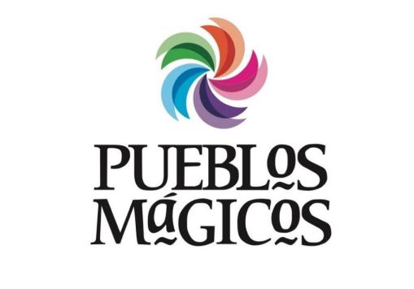

¿Qué son los pueblos mágicos?
El Programa de Pueblos Mágicos es una iniciativa del gobierno de México, creada en 2001 por la Secretaría de Turismo (SECTUR). Su objetivo es promover el turismo y preservar la riqueza cultural, histórica y natural de las pequeñas localidades mexicanas.

El logotipo de los Pueblos Mágicos de México es un diseño lleno de simbolismo, donde cada color tiene un significado especial que refleja la riqueza cultural y natural de estos destinos.
- Azul: Representa a la gente.
- Verde: Indica la naturaleza y la vegetación.
- Naranja: Representa la gastronomía típica de los pueblos mágicos.
- Rosa: Simboliza las artesanías propias de la región.
- Morado: Se refiere a la cultura y tradición del pueblo.